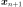
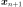
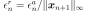
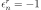
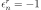

OptimizationResult¶
-
class
OptimizationResult(*args)¶ Optimization result.
Returned by optimization solvers, see
OptimizationAlgorithm.- Available constructors:
OptimizationResult(optimalPoint, optimalValue, evaluationNumber, absoluteError, relativeError, residualError, constraintError)
- Parameters
- optimalPointsequence of float
Optimal point.
- optimalValuesequence of float
Value at optimal point.
- evaluationNumberint
Number of evaluations.
- absoluteErrorfloat
Parameters for this solver.
- relativeErrorfloat
Relative error.
- residualErrorfloat
Residual error.
- constraintErrorfloat
Constraint error.
- problem
OptimizationProblem Associated problem.
- Attributes
thisownThe membership flag
Methods
Draw the convergence criteria history.
Draw the optimal value history.
Accessor to the absolute error.
Accessor to the evolution of the absolute error.
Accessor to the object’s name.
Accessor to the constraint error.
Accessor to the evolution of the constraint error.
Accessor to the number of evaluations.
getId()Accessor to the object’s id.
Accessor to the input sample.
Accessor to the number of iterations.
Accessor to the Lagrange multipliers.
getName()Accessor to the object’s name.
Accessor to the optimal point.
Accessor to the optimal value.
Accessor to the output sample.
Accessor to the underlying optimization problem.
Accessor to the relative error.
Accessor to the evolution of the relative error.
Accessor to the residual error.
Accessor to the evolution of the residual error.
Accessor to the object’s shadowed id.
Accessor to the object’s visibility state.
hasName()Test if the object is named.
Test if the object has a distinguishable name.
setEvaluationNumber(evaluationNumber)Accessor to the number of evaluation.
setIterationNumber(iterationNumber)Accessor to the number of iterations.
setLagrangeMultipliers(lagrangeMultipliers)Accessor to the Lagrange multipliers.
setName(name)Accessor to the object’s name.
setOptimalPoint(optimalPoint)Accessor to the optimal point.
setOptimalValue(optimalValue)Accessor to the optimal value.
setProblem(problem)Accessor to the underlying optimization problem.
setShadowedId(id)Accessor to the object’s shadowed id.
setVisibility(visible)Accessor to the object’s visibility state.
store
-
drawErrorHistory()¶ Draw the convergence criteria history.
- Returns
- graph
Graph Convergence criteria history graph
- graph
-
drawOptimalValueHistory()¶ Draw the optimal value history.
- Returns
- graph
Graph Optimal value history graph
- graph
-
getAbsoluteError()¶ Accessor to the absolute error.
- Returns
- absoluteErrorfloat
Absolute error, defined by
 where  and
where  and  are two consecutive approximations of the optimum.
are two consecutive approximations of the optimum.
-
getAbsoluteErrorHistory()¶ Accessor to the evolution of the absolute error.
- Returns
- absoluteErrorHistory
Sample Value of the absolute error at each function evaluation.
- absoluteErrorHistory
-
getClassName()¶ Accessor to the object’s name.
- Returns
- class_namestr
The object class name (object.__class__.__name__).
-
getConstraintError()¶ Accessor to the constraint error.
- Returns
- constraintErrorfloat
Constraint error, defined by
 where is the current approximation of the optimum and
where is the current approximation of the optimum and  is the function that gathers all the equality and inequality constraints (violated values only).
is the function that gathers all the equality and inequality constraints (violated values only).
-
getConstraintErrorHistory()¶ Accessor to the evolution of the constraint error.
- Returns
- constraintErrorHistory
Sample Value of the constraint error at each function evaluation.
- constraintErrorHistory
-
getEvaluationNumber()¶ Accessor to the number of evaluations.
- Returns
- evaluationNumberint
Number of evaluations.
-
getId()¶ Accessor to the object’s id.
- Returns
- idint
Internal unique identifier.
-
getInputSample()¶ Accessor to the input sample.
- Returns
- inputSample
Sample Input points used by the solver
- inputSample
-
getIterationNumber()¶ Accessor to the number of iterations.
- Returns
- iterationNumberint
Number of iterations.
-
getLagrangeMultipliers()¶ Accessor to the Lagrange multipliers.
- Returns
- multipliers
Point Lagrange multipliers.
- multipliers
Notes
See
OptimizationAlgorithmfor the details on how the multipliers are defined and stored in the result.
-
getName()¶ Accessor to the object’s name.
- Returns
- namestr
The name of the object.
-
getOptimalValue()¶ Accessor to the optimal value.
- Returns
- optimalValue
Point Value at the optimal point
- optimalValue
-
getOutputSample()¶ Accessor to the output sample.
- Returns
- outputSample
Sample Output points used by the solver
- outputSample
-
getProblem()¶ Accessor to the underlying optimization problem.
- Returns
- problem
OptimizationProblem Problem corresponding to the result
- problem
-
getRelativeError()¶ Accessor to the relative error.
- Returns
- relativeErrorfloat
Relative error, defined by  if
 , else .
, else .
-
getRelativeErrorHistory()¶ Accessor to the evolution of the relative error.
- Returns
- relativeErrorHistory
Sample Value of the relative error at each function evaluation.
- relativeErrorHistory
-
getResidualError()¶ Accessor to the residual error.
- Returns
- residualErrorfloat
Relative error, defined by
 if
if  , else .
, else .
-
getResidualErrorHistory()¶ Accessor to the evolution of the residual error.
- Returns
- residualErrorHistory
Sample Value of the residual error at each function evaluation.
- residualErrorHistory
-
getShadowedId()¶ Accessor to the object’s shadowed id.
- Returns
- idint
Internal unique identifier.
-
getVisibility()¶ Accessor to the object’s visibility state.
- Returns
- visiblebool
Visibility flag.
-
hasName()¶ Test if the object is named.
- Returns
- hasNamebool
True if the name is not empty.
-
hasVisibleName()¶ Test if the object has a distinguishable name.
- Returns
- hasVisibleNamebool
True if the name is not empty and not the default one.
-
setEvaluationNumber(evaluationNumber)¶ Accessor to the number of evaluation.
- Parameters
- evaluationNumberint
Number of evaluations.
-
setIterationNumber(iterationNumber)¶ Accessor to the number of iterations.
- Parameters
- iterationNumberint
Number of iterations.
-
setLagrangeMultipliers(lagrangeMultipliers)¶ Accessor to the Lagrange multipliers.
- Parameters
- multipliers
Point Lagrange multipliers.
- multipliers
Notes
See
OptimizationAlgorithmfor the details on how the multipliers are defined and stored in the result.
-
setName(name)¶ Accessor to the object’s name.
- Parameters
- namestr
The name of the object.
-
setOptimalPoint(optimalPoint)¶ Accessor to the optimal point.
- Parameters
- optimalPoint
Point Optimal point
- optimalPoint
-
setOptimalValue(optimalValue)¶ Accessor to the optimal value.
- Parameters
- optimalValue
Point Value at the optimal point
- optimalValue
-
setProblem(problem)¶ Accessor to the underlying optimization problem.
- Parameters
- problem
OptimizationProblem Problem corresponding to the result
- problem
-
setShadowedId(id)¶ Accessor to the object’s shadowed id.
- Parameters
- idint
Internal unique identifier.
-
setVisibility(visible)¶ Accessor to the object’s visibility state.
- Parameters
- visiblebool
Visibility flag.